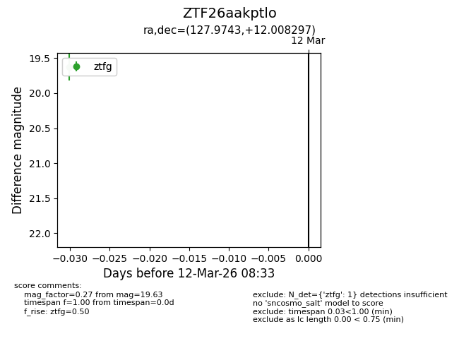
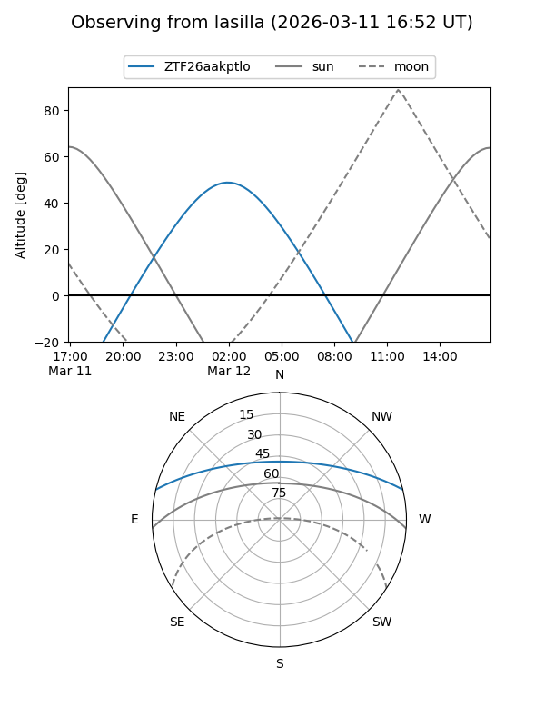
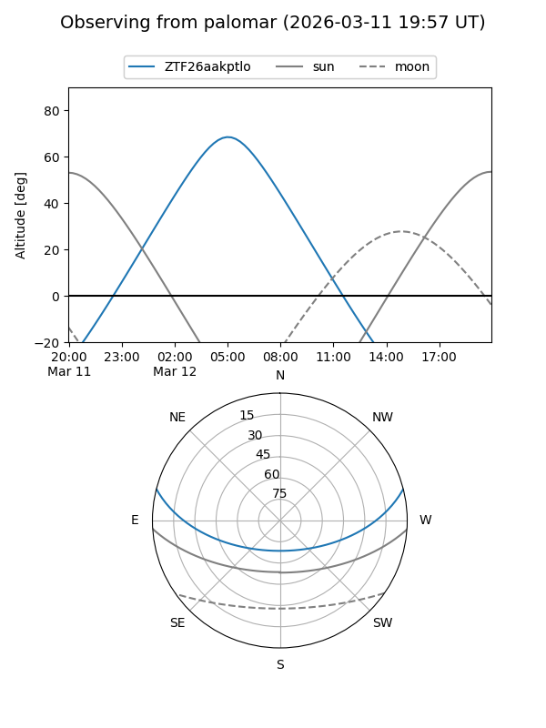

ZTF26aakptlo
Target ZTF26aakptlo at 2026-03-12 08:35
Aliases and brokers:
FINK: link
Lasair: link
ALeRCE: link
alt names
ZTF26aakptlo (ztf,fink_ztf)
Coordinates:
equatorial (ra, dec) = 127.9743,+12.00830
equatorial (HMS+DMS) = 08:31:53.84,+12:00:29.87
galactic (l, b) = (213.1994,+27.66779)
Flags:
Photometry:
last ztfg=19.63
1 ztfg detections
Lightcurve

Visibility


Additional plots